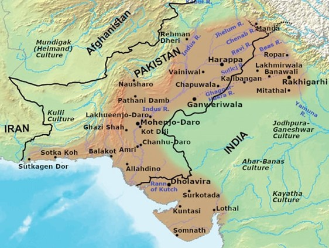
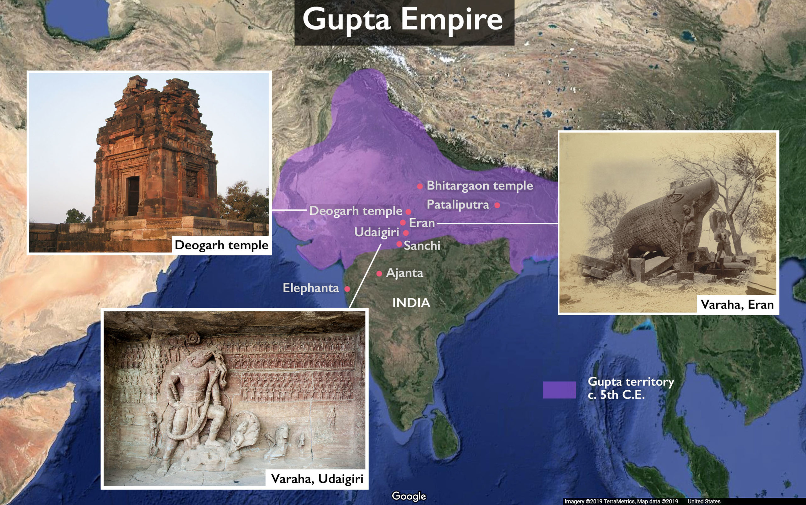
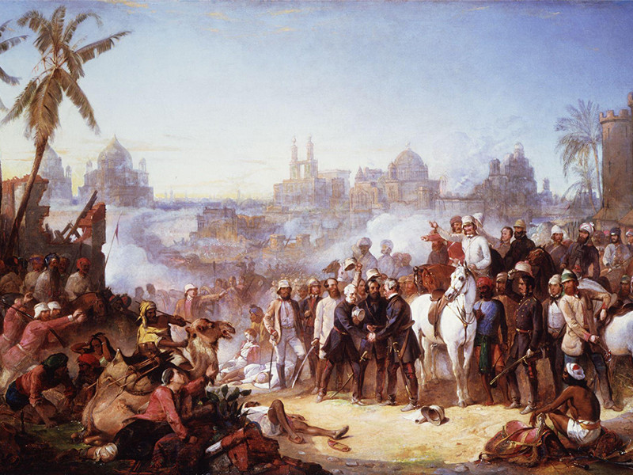
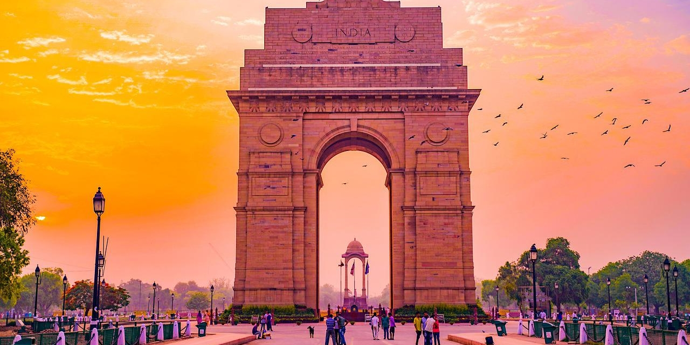

Indus Valley Civilization (3300–1300 BCE)
The Indus Valley Civilization was one of the world's earliest urban cultures, known for its advanced city planning, drainage systems, and trade networks. Centered in modern-day India and Pakistan, it remains a cornerstone of Indian history and heritage.
Gupta Empire (320–550 CE)
The Gupta Empire is often referred to as the "Golden Age" of India. This period saw significant advancements in science, mathematics, art, and literature, including the creation of the decimal system and iconic works like Kalidasa's plays.
British Colonial Rule (1757–1947)
British rule brought profound changes to India's economy, society, and governance. The struggle for independence, led by iconic figures like Mahatma Gandhi, culminated in India's freedom on August 15, 1947, after nearly 200 years of colonial rule.
Modern India (1947–Present)
Since independence, India has emerged as the world's largest democracy and a global leader in technology, economy, and culture. With a rich history and vibrant diversity, India continues to shape its future while honoring its past.